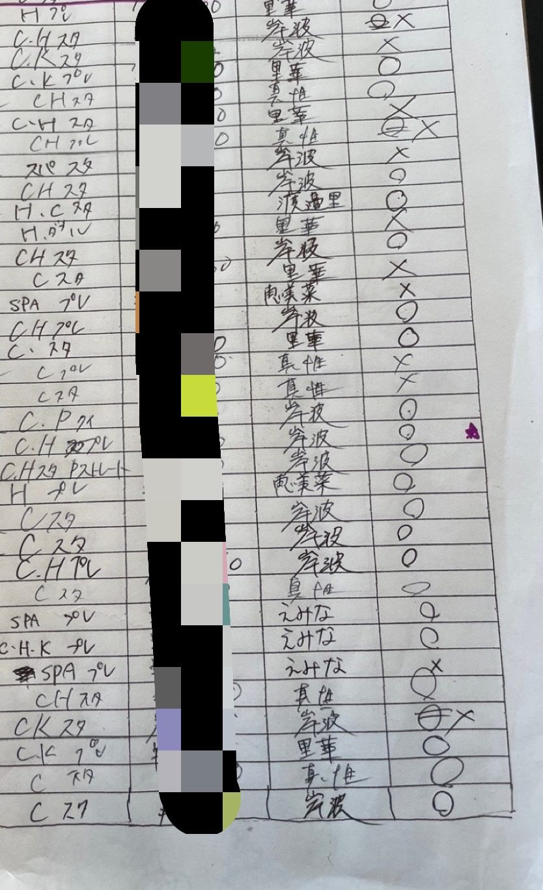

成果爆発❗️
おはようございます。
アトリエ・ナインの菅野です。
日々の意識づけ。
これってかなり重要ですよね。
アトリエ・ナインに入社したくれている子に最近はこのことを伝えています。
「やるか、やらないか」
ほんとこれに尽きると思います。
いくらやる気はあると言ってもやらなければ全く意味がありません。
やっているつもりでも、やらなければ成果も上がりません。
ナインのスタッフ目標の一つに次回予約があります。
僕は正直、次回予約ぶち上げる気になればほぼ取れます。
実際に、新規や再来のお客様の僕への受け入れは基本しておりません。でもどうしても紹介したいというお客様＜ホントやっていないですが、どうしようもない髪の状況のお客様で、既存で僕が指名をいただいているお客様の紹介＞やスタッフの仕事上、僕が入客をしなければならない状況の場合のお客様でもここ１年くらい１００％の確率で次回予約が取れています。
それを最近は
スタッフにマニュアル化、カウンセリングのトレーニング、技術指導、インアフターカウンセリング、次回予約への提案
までの一連の流れをやってもらっています。
ここ２年くらいかけてゆっくりではありますが、徐々に精査されていき、ここ２、３ヶ月かないいい感じに仕上がってきました。

これは森合店の今月のごく一部。新規のお客様の次回予約の表。
入社間もない子や、Jrスタイリストの子達もガッツリ次回予約取ってくれています。
岡部のスタッフも同じくらい、それ以上に次回予約をとってくれています。
これは成果は、「やるか、やらないか」です。
最近スタッフも、次回予約が取れてきて、自分の予約が埋まってくれている喜びが芽生えてきてくれています。
実際、土日や平日も最近僕よりもスタッフの方が忙しくなってくれています。
僕がアシスタントする時間も出てきています＜笑＞
ホント、スタッフの成長で笑顔が止まらないくらい、素晴らしいことです。
おかげで最近サロンワークを減らせて、裏方の仕事がほんと思うようになっていき、ノンストレスです。
自分のお客様には大変ご迷惑をお掛け致しておりますが、何卒よろしくお願いいたします。
自分以外にも今のスタッフは優秀な子達ですので、サロンワークにいない場合はスタッフがしっかり対応いたしますので、よろしくお願いいたします。
それではまた。
株式会社 アトリエ・ナイン 代表 菅野
福島市で髪質改善、ヘッドスパサロンを展開しており、２０１９年１０月には待望の２店舗目をオープン。
オープンしてから３年目に法人化。オープン５年目に突入。サロンの労働環境改善のため社員の週休２日を実現。サロンワーク８時間で残業なし。スタッフに働きやす環境整備をもっとうに経営を心がけております。
求人に少しでも興味のある方はお気軽にお問い合わせください。
サロン見学や求人の概要の問合せ、相談など、なんでもお待ちしております。
LINE@:@jnp9523c
までお問い合わせください。